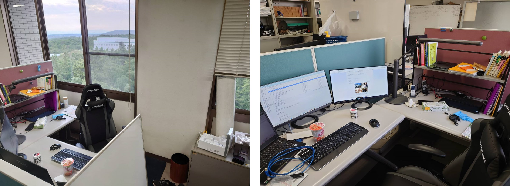
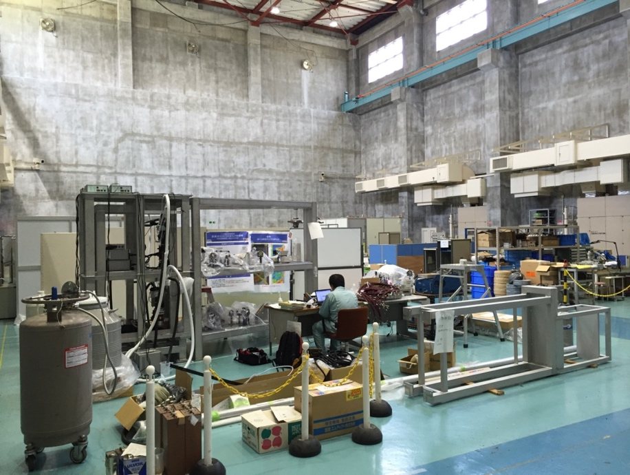
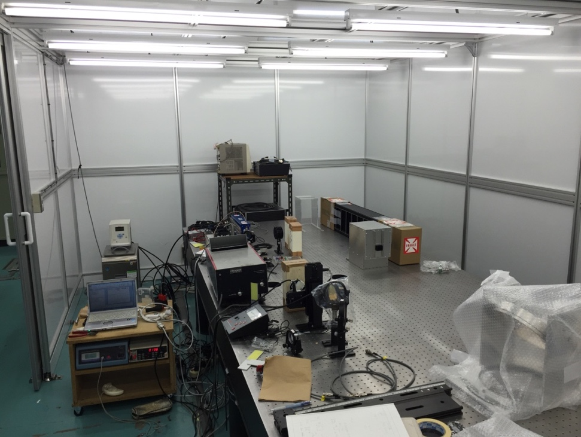
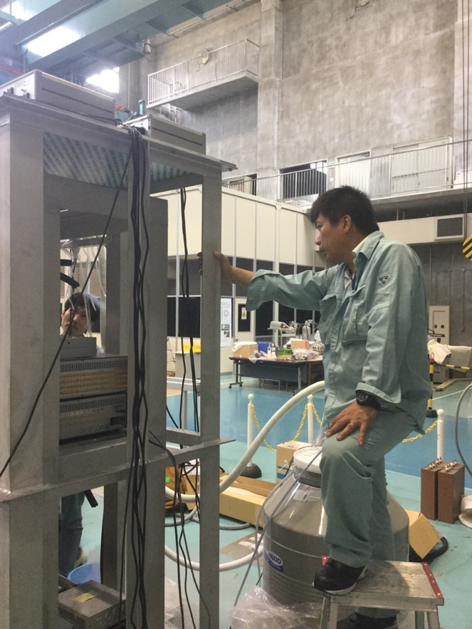
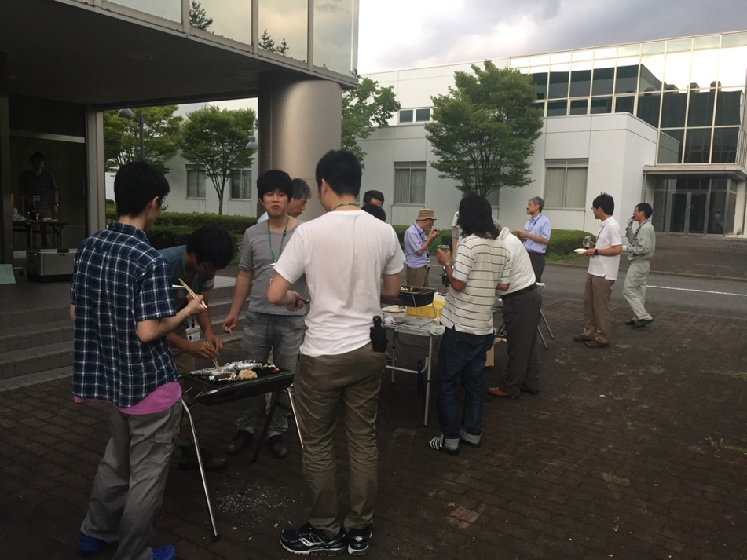
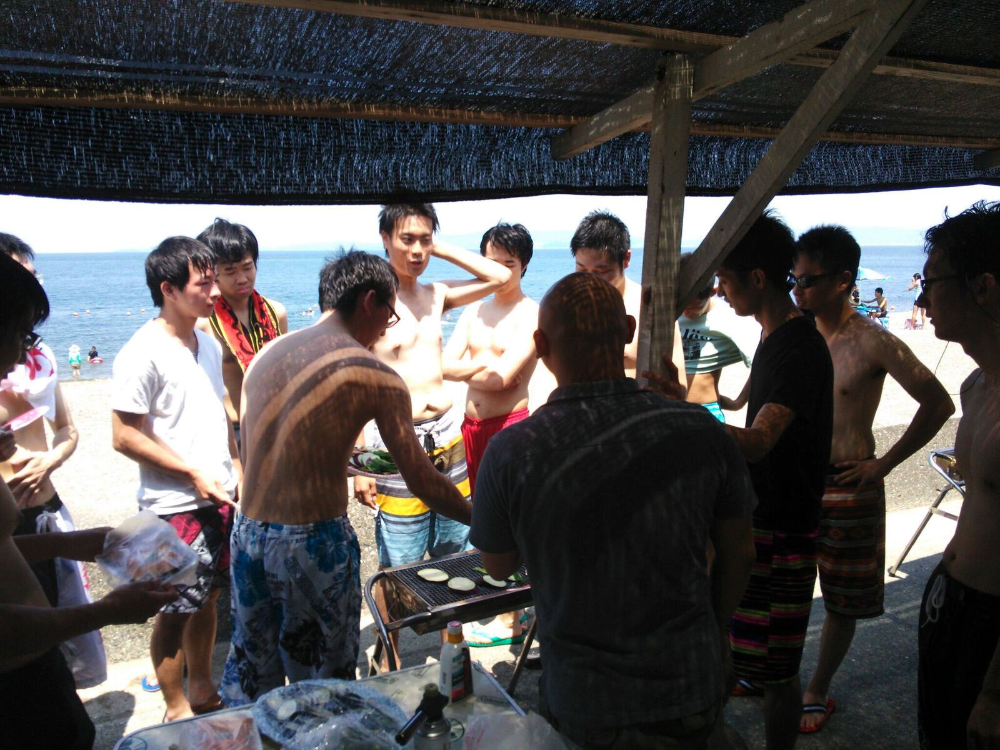
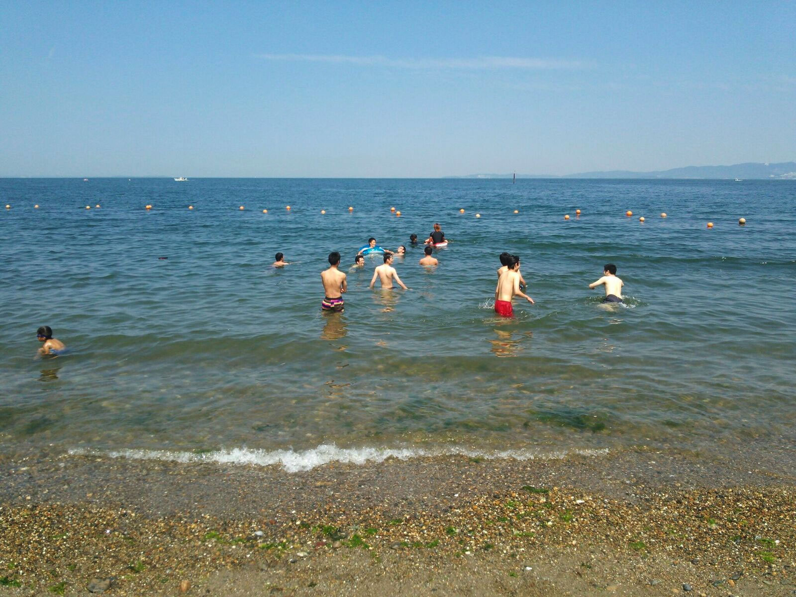
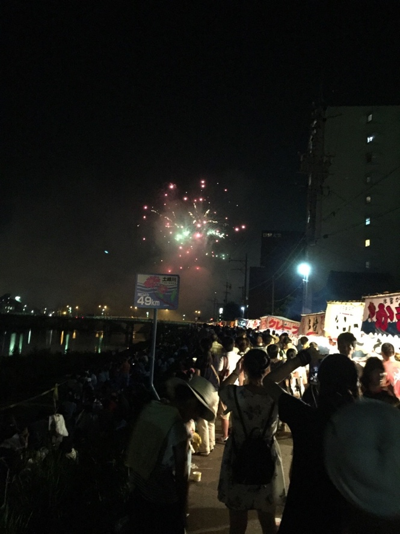
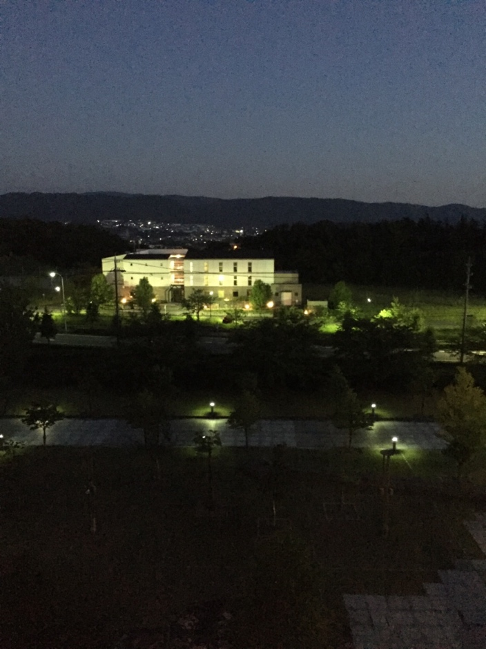

Here, Takeshida (a Tanaka Lab alumnus) explains the daily workflow and life of research activities at the institute using various photographs. (Currently updated and maintained by Sakai, a D2 student at the Tanaka Lab.) If you join our laboratory, you will spend the first six months after admission commuting to the Chikushi Campus of Kyushu University in Fukuoka to complete the course credits required for graduation. Even if you fall slightly short, intensive courses are held from time to time, so there is no need to worry. Research activities at the institute generally begin in earnest in September, right after the first-semester lectures conclude.
To help you better visualize your potential life as a graduate student here, I will make this introduction as visual as possible. First, let’s take a peek inside our student room. Figure 1 below shows the typical atmosphere of the room on any given day.

As is true for almost any laboratory at NIFS, each student's personal territory is nearly twice as large as that of a typical university lab. Basically, you are provided with two desks, and individual spaces are neatly partitioned off. This allows everyone to arrange their layout however they like and completely immerse themselves in their research. Students spend about 1.5 years (for Master's) or 4.5 years (for Ph.D.) here engaged in research activities. It might be easier to visualize if you think of your undergraduate lab: the student sitting right next to you is usually working on something completely different, right?
At the institute, the student sitting next to you might even belong to an entirely different laboratory. Because of this diverse environment, you can easily ask for help and learn from others when you encounter things you don't understand yourself.
Furthermore, at the institute, there are typically two faculty advisors assigned to each student on average. I've heard that at some universities, a single advisor has to look after 12 or more students simultaneously. While individual preferences may vary, from a research perspective, this provides truly the ultimate environment.
Now, let’s move on to the laboratories in the Diagnostics Building, which is one of the most exciting parts of working at the institute. Generally, we perform bench tests in the Diagnostics Building to prepare for the LHD experiments, which take place once a year (typically from October to February). Figure 2 below shows the overview of the Diagnostics Building.

Figure 2 provides an overview of the Diagnostics Building. The person in the photo is our advisor, Professor Tanaka. Here, laser diagnostics experiments are underway. Let’s head over to the specific area where the Tanaka Lab conducts its operations.

This photo shows a performance test being conducted on a newly purchased laser system. In this experimental booth, we perform mock-up experiments to verify critical questions: Will it work practically when installed on the LHD? Is this system optimal? Is it worth dedicating time to this specific experiment? If you are browsing this website today, you might find yourself conducting experiments in this very booth in the near future. As for the technical details of our core research topics, they are already covered on the "What is Nuclear Fusion" page, so I will omit them here.

The photo above shows us preparing for the LHD experiments. Here, we are performing an operational test. Currently, we are busy setting things up and maintaining systems for the upcoming LHD experimental campaign.
As a side note, I wasn't originally deeply interested in "nuclear fusion" or "laser diagnostics" myself... During my undergraduate years, my research focused on measurements in aerospace engineering. However, during my senior year, I thought, "I want to do research on a much grander scale!" After searching extensively across different disciplines, I chose my current path. Through my involvement in fusion research, I've come to realize that the energy field (including fusion) requires a vast and diverse body of knowledge. What are the root causes of the global energy crisis? Why must we realize nuclear fusion power generation? What is the necessity of fundamental research in laser diagnostics?
When I first arrived at the institute, I didn't know the answers. Honestly, I still don't have perfect answers today. However, the energy sector is deeply intertwined with various backgrounds. It demands an understanding that spans global affairs, economics, and history. Why aren't existing power generation methods (thermal, hydro, nuclear fission, renewables) sufficient on their own? Spending the final two years of your student life acquiring such broad knowledge is a highly valuable experience.
Japan has long been celebrated as a nation of "Monozukuri" (manufacturing)—though I'm not entirely sure about the present day... It has given birth to numerous groundbreaking technologies. At the very foundation of this achievement, I believe, lies our history of constantly generating stable "electricity." No matter how affluent society becomes, the modern world can no longer function without electricity. To protect the "everyday life" we take for granted for the next 100 years, why not dedicate two years to nuclear fusion, a field that is still in its exciting research phase?
Now, let’s step away from research and talk about other aspects of life. During your two years of graduate school, enjoying your time off in places like Fukuoka and Nagoya is also highly important! Personally, I often spend my weekends exploring Osaka, Kyoto, and Nagoya. While I can't share too much of my private life here, I’d love to show you some photos of our social events at the institute.

Figure 5 above shows a BBQ gathering held right outside the Diagnostics Building that we use every day. Since this particular one was a small-scale event, the number of participants was limited, but these kinds of get-togethers are a regular part of lab life. (Although they were temporarily suspended due to the pandemic, I really hope we can host a large one again this year!)
By the way, summer is already here. Toki and Tajimi City are famous for being incredibly hot—even holding the record for the highest temperature in Japan at one point—yet they get freezing cold in the winter. Coming from Kyushu and having spent my university days in a warm southern climate, the weather here was pure torture at first. Returning to the topic, summer is all about being outdoors! We went out for classic summer activities like heading to the beach, hosting BBQs, going on drives, and watching fireworks with members from the institute. This time, 14 Japanese graduate students (both Master's and Ph.D.) took a trip to the beach in Aichi Prefecture. We enjoy organizing social events like this.


By now, you probably have a pretty good picture of what life is like here. You might still wonder, "Can someone like me really keep up with research at a national institute?" or "Will I fit in if I'm a quiet person?" To be perfectly blunt, the students at the institute have highly unique and distinct personalities. Honestly, I had never met such an eclectic group of people before (no offense intended, haha!). But looking at it from another perspective, it means this environment welcomes absolutely anyone. Whether you are an outdoor or indoor person, love partying in groups or playing video games alone, enjoy live music concerts, or participate in cosplay events...
The list goes on, but everyone utilizes their own individuality to thrive here. Therefore, worrying about fitting in or navigating relationships is a total waste of time.
To wrap things up, I’d like to leave you with a photo of the Tajimi City fireworks display—a quintessential Japanese summer tradition—and the beautiful evening view from the institute's designated outdoor relaxation area.

